Sukiyaki

Sukiyaki hotpot with beef, tofu, mushroom, cabbage, and noodles
Ingredients
For the Kombu Dashi (for diluting the cooking sauce; as needed)
- 2 cups water
- 1 piece kombu(dried kelp)
For the Sauce (yields roughly 1⅓ cups)
- ½ cup sake
- ½ cup mirin
- 3 Tbsp sugar
- ½ cup soy sauce
For the Sukiyaki
- 4 leaves napa cabbage(12 oz, 340 g)
- ¼ bunch shungiku (chrysanthemum greens) (3.5oz, 100 g)
- 1 Tokyo negi (naga negi; long green onion)(while part only; or 1 leek/4 green onions)
- 6 inches gobo (burdock root)(1.6 oz, 45 g)
- ½ onion (3.5oz, 100g)
- ½ package enoki mushrooms(1.75oz, 50g; skip or use other mushrooms)
- ½ package maitake mushrooms(1.75 oz, 50g; skip or use other mushrooms)
- 2 shiitake mushrooms(1.75oz, 50 g; skip or use other mushrooms)
- ½ package broiled tofu (yaki dofu) (one package is 9 oz, 255 g ;or use medium-firm (momem) tofu)
- 1½ inches carrot (optional, for decoration and color)
- ½ package shirataki noodles (3.5oz, 100g; or cellophane/yam noodles)
- ½ lb thinly sliced beef (chuck or ribeye) (or slice your own meat;skip for vegan/vegetarian ad use more tofu, mushrooms, and vegetables)
- 1 Tbsp neutral oil (or 1 small piece of suet (raw beef fat))
For Serving
- 2 large eggs (50 g each 1/o shell)(optional, for dipping; for safety, buy pasteurized eggs or make sous vide eggs; skip for vegan)
For the Shime Finishing Course
- 1 serving udon noodles (cooked and drained)
Instruction Steps
To Make the Kombu Dashi and Sukiyaki Sauce
- Gather all the dashi and sauce ingredients. Tip: You‘ll use the dashi and sauce to adjust the seasoning of the broth as
you cook. This recipe makes more dashi than you need for this dish and you‘ll likely have leftovers.
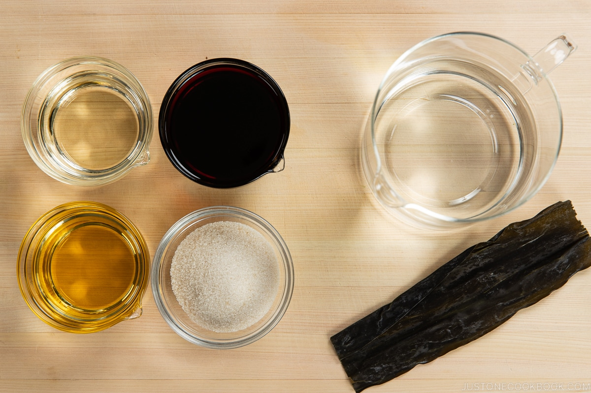
- To make the cold brew Kombu Dashi, put 2 cups water and 1 piece kombu (dried kelp) in a measuring cup or pitcher. Set it
aside to steep for a minimum of 30 minutes, or make it ahead up to overnight.
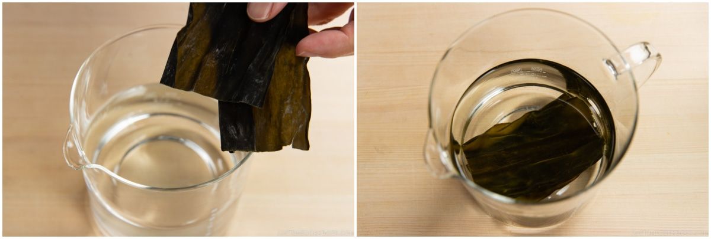
- To make the sukiyaki sauce, combine ½ cup sake and ½ cup mirin in a small saucepan. Bring it to a boil and reduce the
heat to simmer and let the alcohol evaporate for a minute or so.
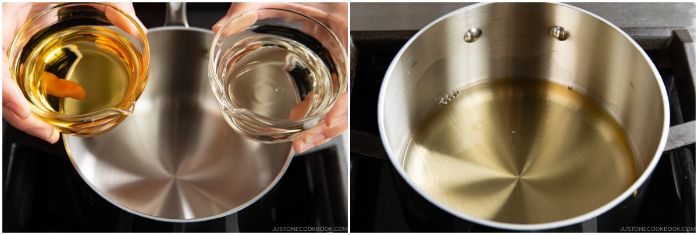
- Add 3 Tbsp sugar and ½ cup soy sauce and mix together. Bring it back to a boil. Once the sugar is completely dissolved,
turn off the heat and set it aside.
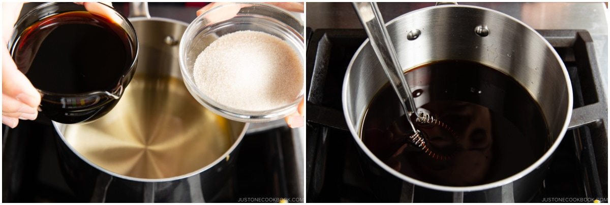
- Transfer the sauce to a pitcher and bring both the dashi and the sauce to the table. Tip: You can make the sukiyaki
sauce ahead and store it in an airtight container in the refrigerator for up to a month.
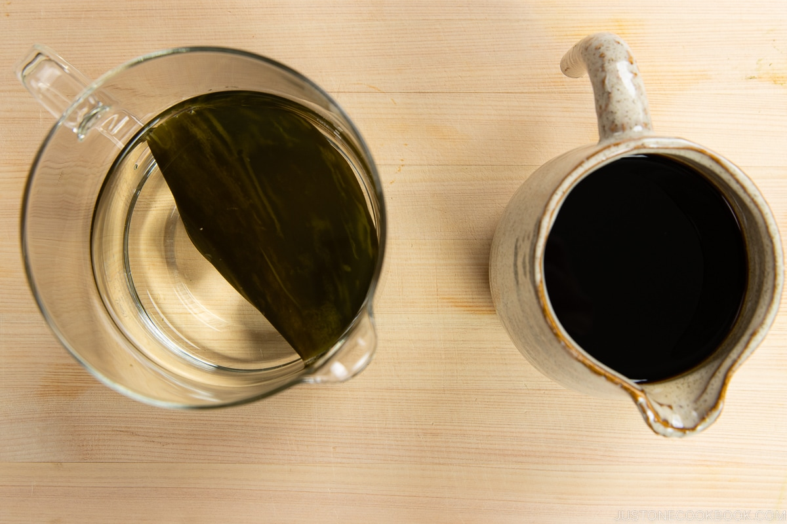
To Prepare the Sukiyaki Ingredients
- Gather all the sukiyaki ingredients. Feel free to customize the portions to suit your personal preference. Here, I used
the entire package of grilled tofu (twice as much) since we love tofu.
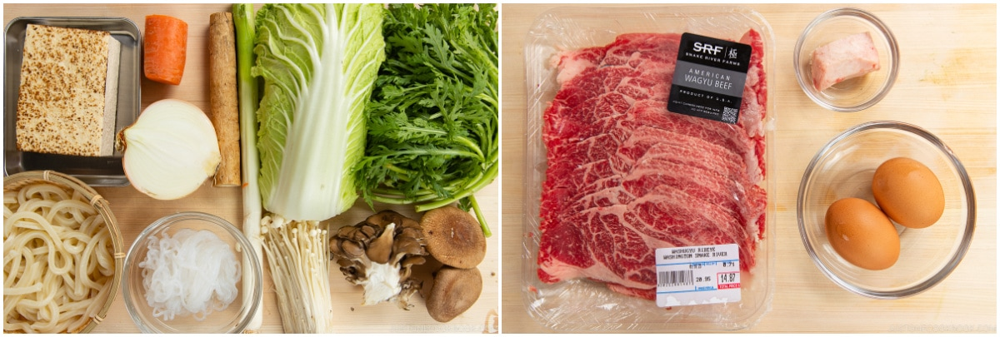
- Cut 4 leaves napa cabbage into pieces 2 inches (5 cm) wide.
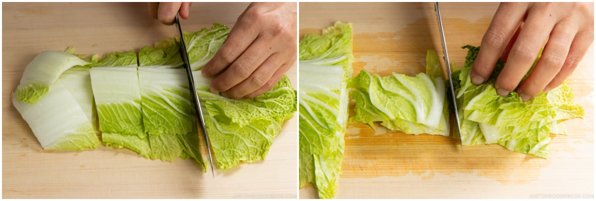
- Cut the pieces in half or thirds down along the thick white center of the leaves.
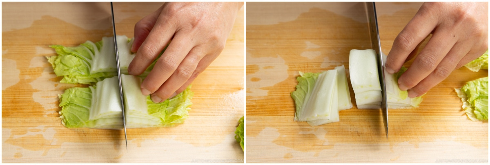
- Cut ¼ bunch shungiku (chrysanthemum greens) 2 inches (5 cm) wide.
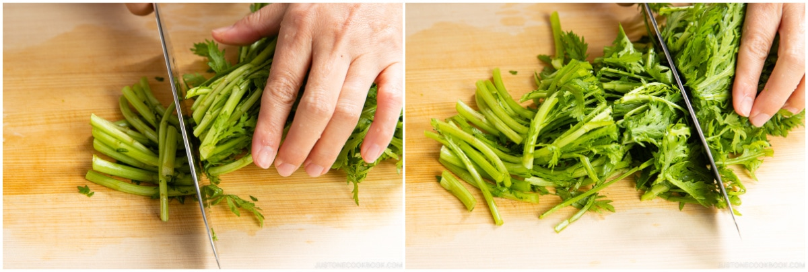
- Slice the white part of 1 Tokyo negi (naga negi; long green onion) diagonally into ½-inch (1.3 cm) pieces.
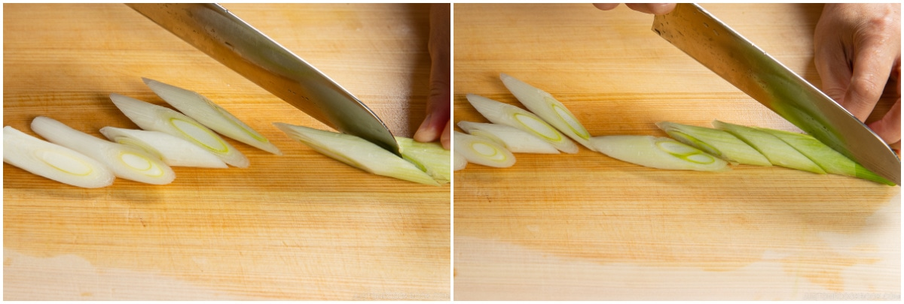
- Scrape off the outer skin of 6 inches gobo (burdock root) with the back of a knife. The gobo‘s flavor is just under the
skin, so don‘t use a vegetable peeler and peel that flavor away. Once you scrape off the skin, shave the gobo into
superthin strips using a vegetable peeler.
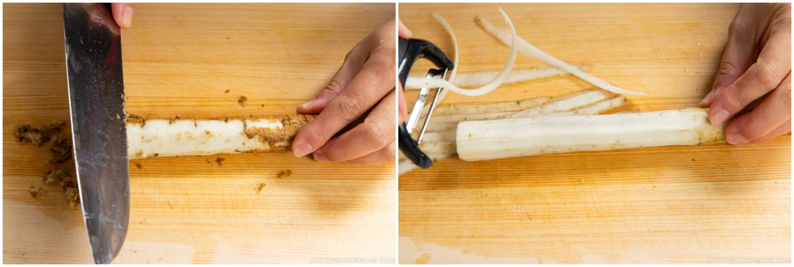
- Soak the gobo strips in water for 5 minutes, changing the water once. Drain well.
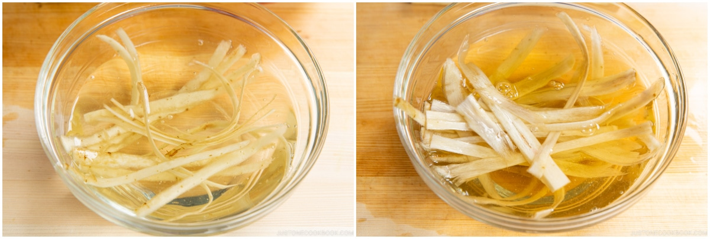
- Cut ½ onion into ½-inch (1.3 cm) slices widthwise. Next, discard the bottom part of ½ package enoki mushrooms and tear
it into smaller clusters.
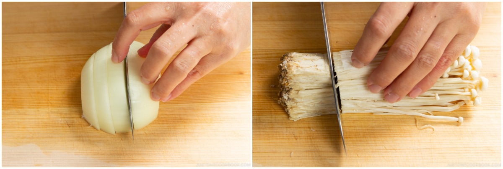
- Cut off and discard the root ends of ½ package maitake mushrooms and separate the maitake bunch into 2 small clusters.
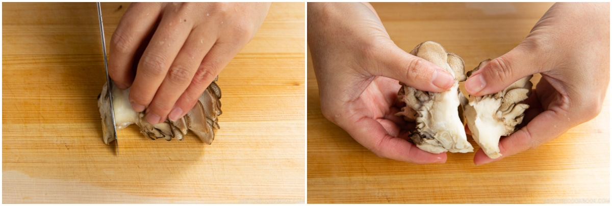
- Cut off and discard the stems of 2 shiitake mushrooms. Optionally, you can cut a flower pattern on the shiitake mushroom
caps: First, cut a sliver off the top of the mushroom cap by making 2 incisions in the shape of a “V". Bevel these cuts
toward each other by inserting the knife at an angle.
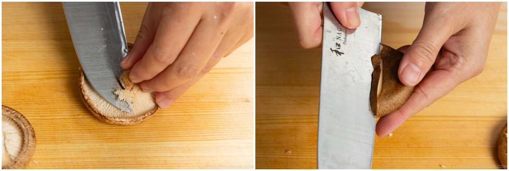
- Make a second cutout in the same manner to form an "X" with the first cutout. You can keep this "X" pattern or add one
or two more cutouts.
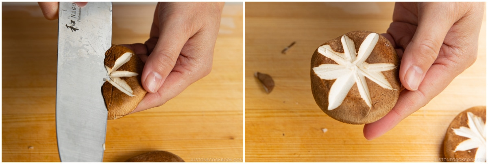
- Cut ½ package broiled tofu (yaki dofu) into smaller pieces. We usually double the tofu portion and cut one block into
6–8 pieces.
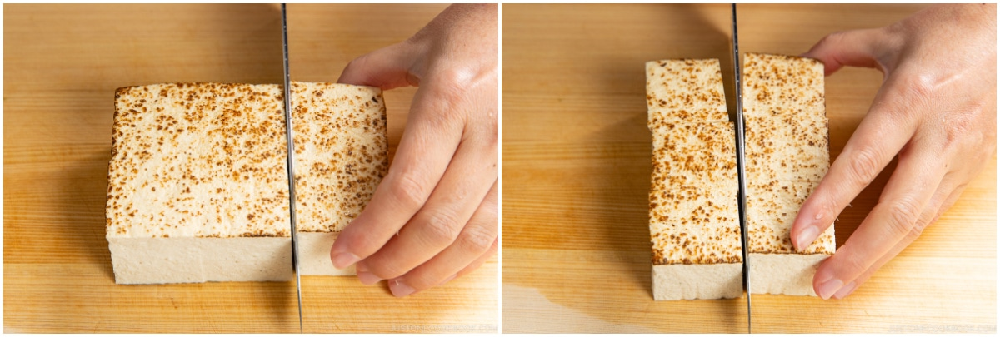
- If you‘d like to make flower-shaped carrots (optional), first slice 1½ inches carrot into ¼-inch (6 mm) rounds.
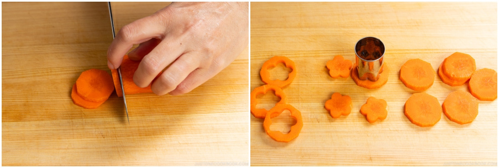
- Here, I stamp the carrot coins with a vegetable cutter into a floral shape for decoration.
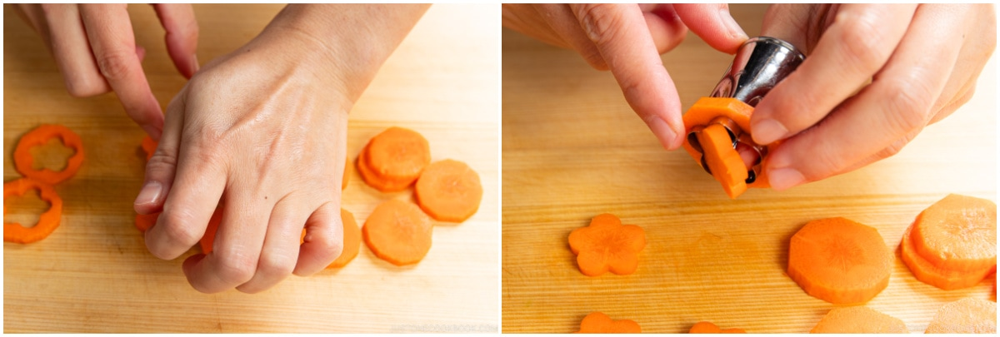
- Rinse and drain ½ package shirataki noodles. Cut the noodles in half. Add the shirataki noodles to boiling water to
remove any odor. Once the water is boiling again, cook for 2 minutes, drain, and set aside.
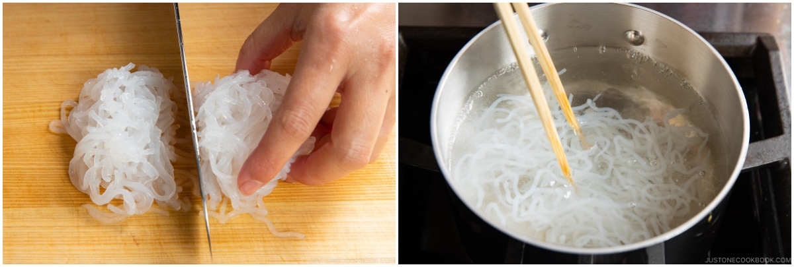
- Rinse and drain ½ package shirataki noodles. Cut the noodles in half. Add the shirataki noodles to boiling water to
remove any odor. Once the water is boiling again, cook for 2 minutes, drain, and set aside.
- Place ½ lb thinly sliced beef (chuck or ribeye) and suet (if using) on a plate. Put all the ingredients on a big platter
or bamboo tray for the dining table. I prepared my eggs sous vide (read the blog post) for dipping the cooked sukiyaki
ingredients. I also cooked and drained 1 serving udon noodles and set them aside for the final course.
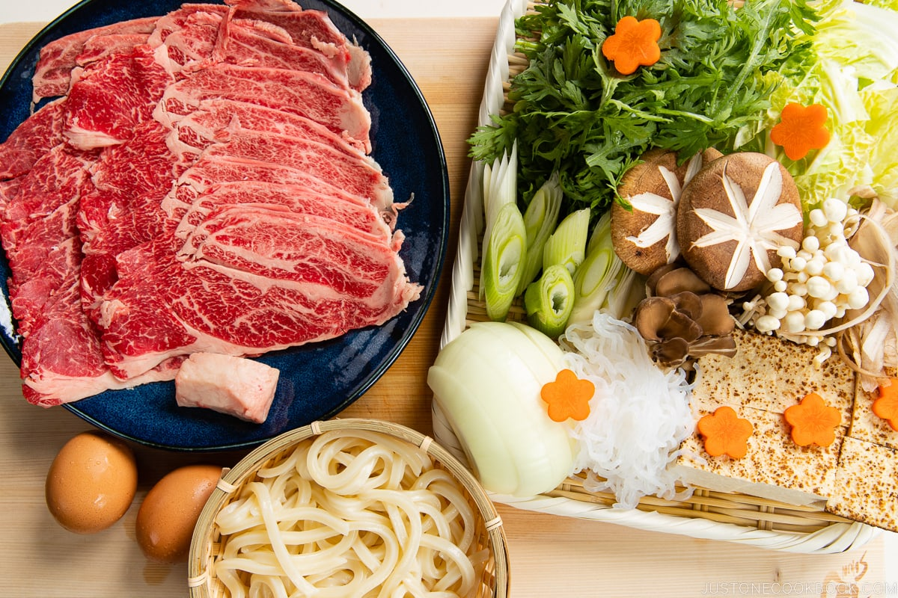
To Cook the Beef
- Set a portable gas cooktop at the dining table. I use this cast-iron sukiyaki pot that I got from MTC Kitchen (use JOC10
for 10% off) and an Iwatani portable butane stove. Give each person a medium-sized bowl to put the cooked food from the
pot.
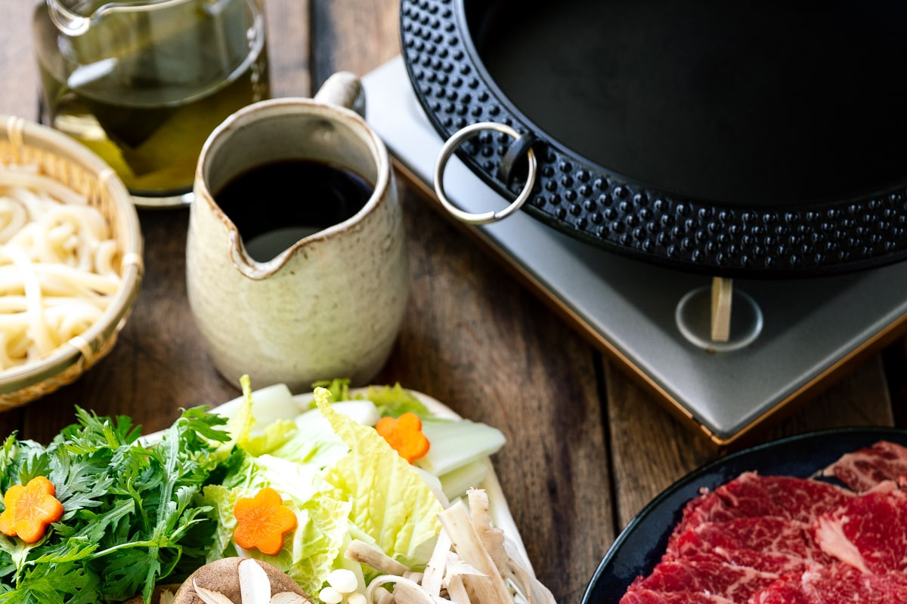
- Heat the cast-iron sukiyaki pot (or any pot) on medium heat. When it’s hot, add 1 Tbsp neutral oil (or the suet). Then,
pour in barely enough sukiyaki sauce to cover the bottom of the pot, about ⅛–¼ inch of sauce.
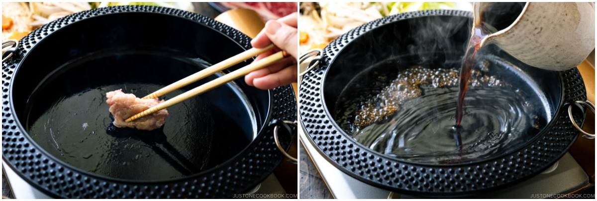
- Place a few slices of well-marbled beef in the pot. When the bottom side of the meat is cooked, flip and cook the other
side. Enjoy some (or all) of the sweet and caramelized meat now to consume this good-quality beef at its best. You can
eat a few rounds of meat first or leave the meat in the pot and continue to the next step.
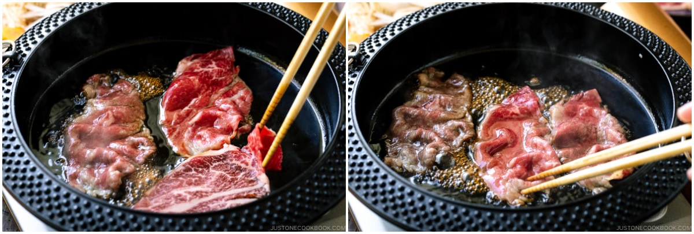
To Enjoy with Pasteurized Raw Egg (optional)
- How to Enjoy Sukiyaki in Japan: In Japan, we prepare a raw egg for each person at the table. Everyone cracks their own
egg in their individual small bowl, beats it, and dips the cooked ingredients in the egg to enjoy. While raw eggs are
safe to consume in Japan, US raw eggs are not recommended for consumption unless they are pasteurized. Therefore, I
pasteurize my eggs using the sous vide method. When you get a chance in Japan, please try this traditional way to enjoy
sukiyaki.
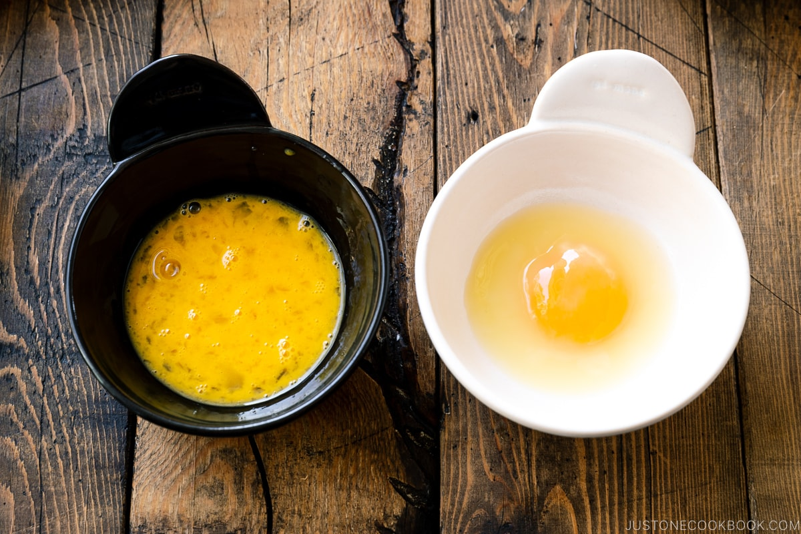
- If you are using 2 large eggs (50 g each w/o shell) that are pasteurized, dip the cooked beef in the beaten egg to
enjoy. The salty and savory sukiyaki ingredients become mild and sweet after dipping in the egg. If you‘re not using
eggs, drizzle in a bit of kombu dashi to dilute the sauce in the pot, to your liking; otherwise, it might taste too
salty.
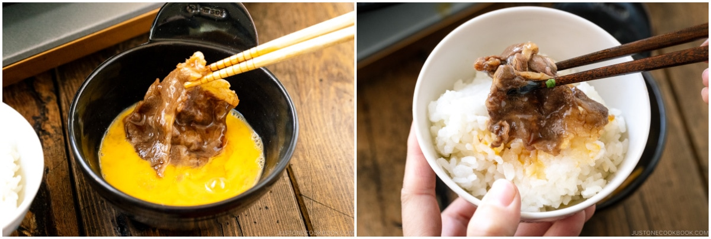
To Cook the First Round of Sukiyaki
- Add some vegetables, tofu, mushrooms, and other ingredients (except the udon) to the pot. Pour in enough sukiyaki sauce
to partially submerge the ingredients in the sauce, about one-third of the way or about ¼ inch of sauce. If you aren‘t
using eggs for dipping, drizzle in a small amount of kombu dashi into the pot to dilute the sauce to your liking. Bring
to a gentle simmer. Then, turn down the heat and simmer until cooked through. You can add more beef now, as it cooks
fast. Taste the sauce and drizzle in a tiny bit of dashi or water if it‘s getting too salty.
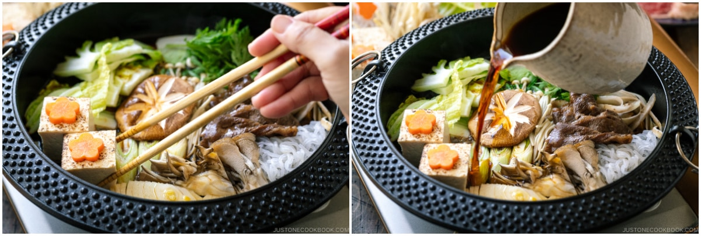
- Transfer some of the cooked ingredients to the individual bowls and enjoy the first round of sukiyaki. Taste the food
and adjust the seasoning in the pot as needed; drizzle in a bit of dashi or water if it‘s too salty or add a few drops
of sukiyaki sauce if it needs more seasoning. Tip: Adjusting the seasoning as you go is a normal part of cooking and
enjoying Sukiyaki.
To Cook the Second and Third (Optional) Rounds
- When there is less cooked food in the pot, portion what‘s left into the individual bowls. Then, start cooking the second
round by adding more ingredients to the pot (repeat the previous step). While it's cooking, you can continue to eat the
rest of the first round of sukiyaki or any side dishes. Eventually, you can cook a third round to finish any remaining
uncooked ingredients. Tip: Continue to adjust the broth seasoning. If your sukiyaki sauce runs out, add soy sauce and
sugar to the broth in a pinch. If your dashi runs out, use water instead.
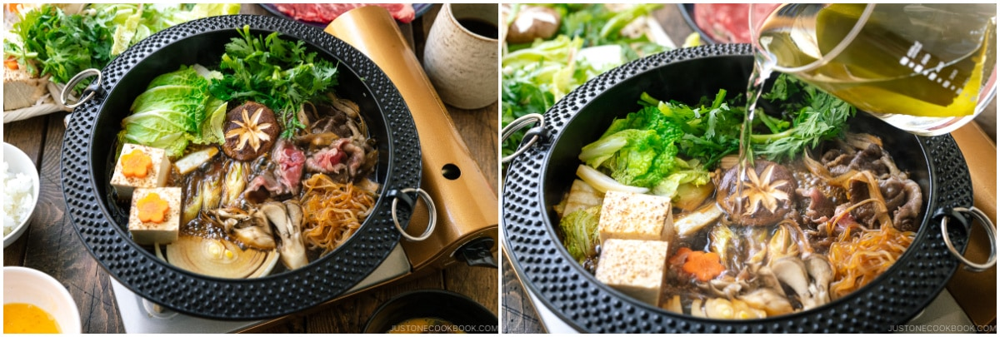
To Enjoy the Finishing Course (Shime)
- We usually end the sukiyaki meal with a final course (shime) of udon. When most of the ingredients have disappeared, add
the cooked udon noodles to the remaining broth in the sukiyaki pot. Heat through and enjoy.
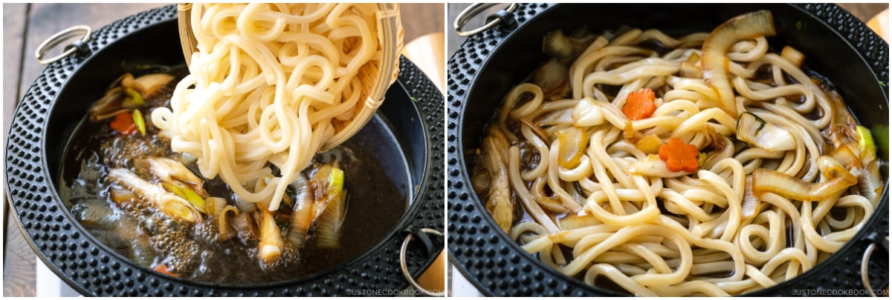
To Store Leftovers
You can keep the Sukiyaki leftovers in an airtight container and store in the refrigerator for up to 3 days or in the
freezer for a month. Tofu does not freeze well, so remove it before freezing. Store leftover kombu dashi in a bottle or
airtight container in the refrigerator for 4–5 days (and use it for Miso Soup) or in the freezer for 2 weeks. Store
leftover sukiyaki sauce in an airtight container in the refrigerator for up to a month.